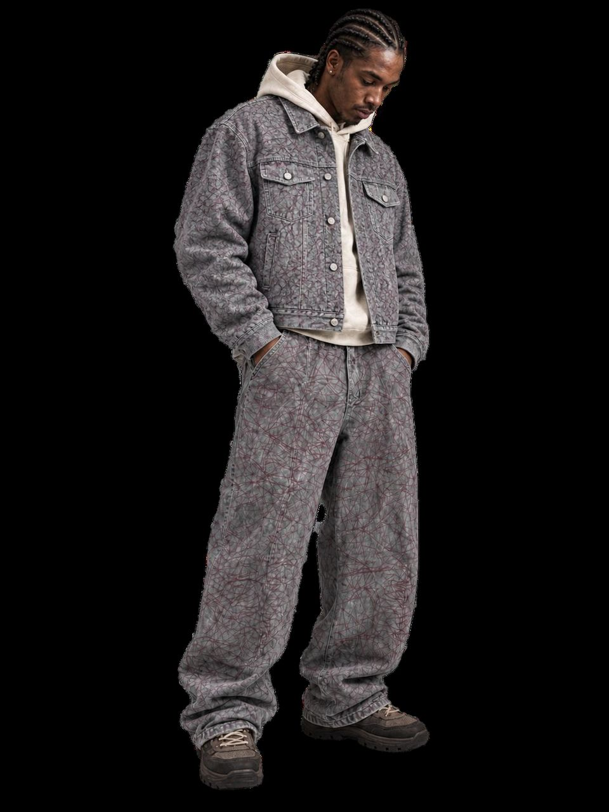
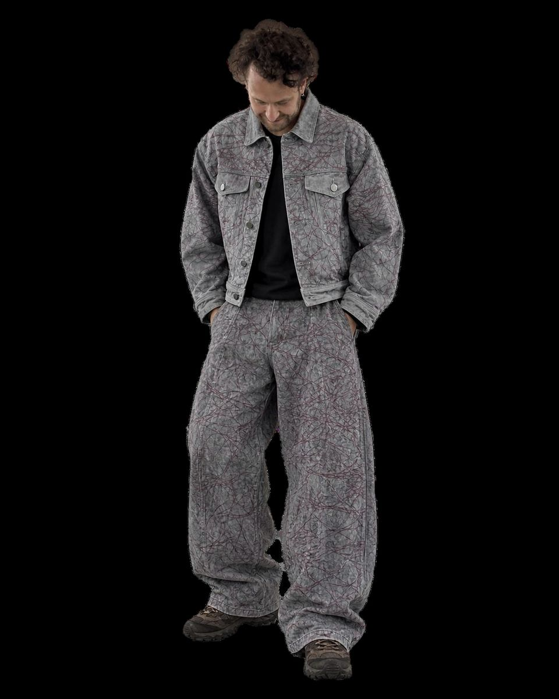
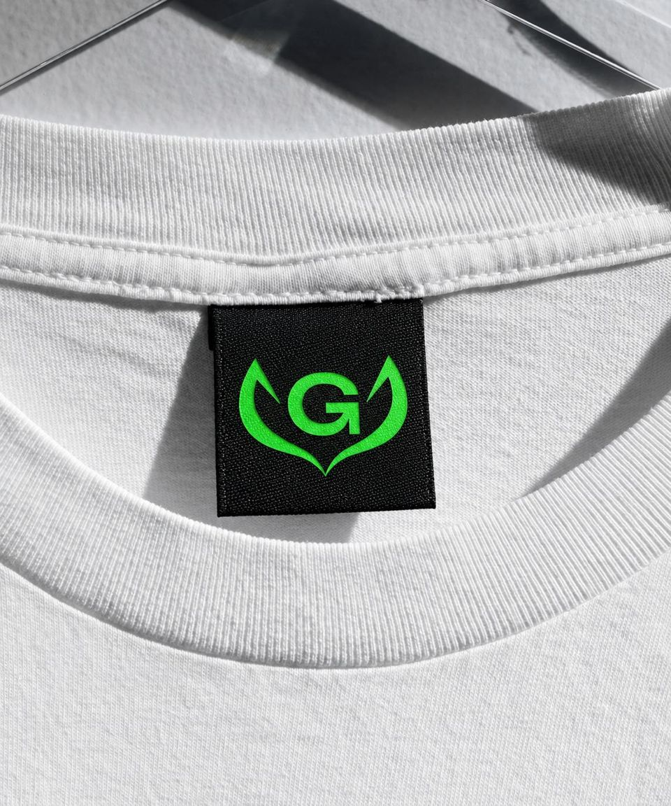
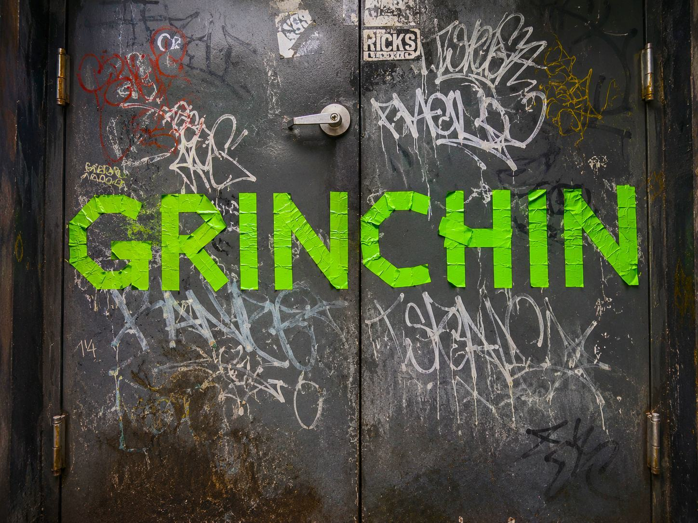
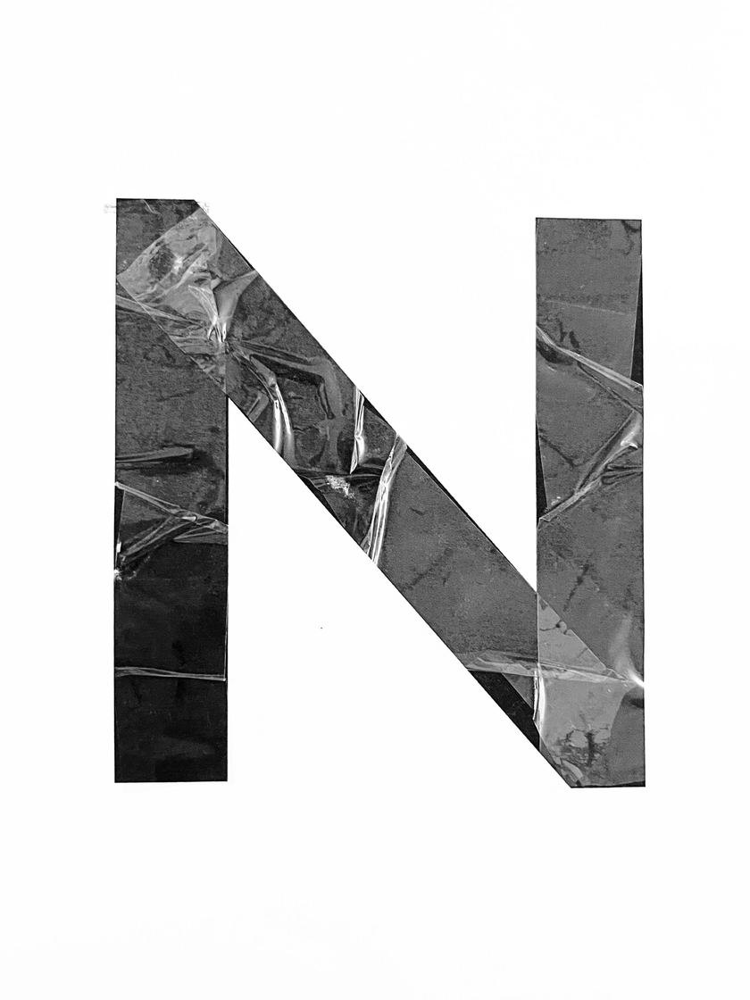
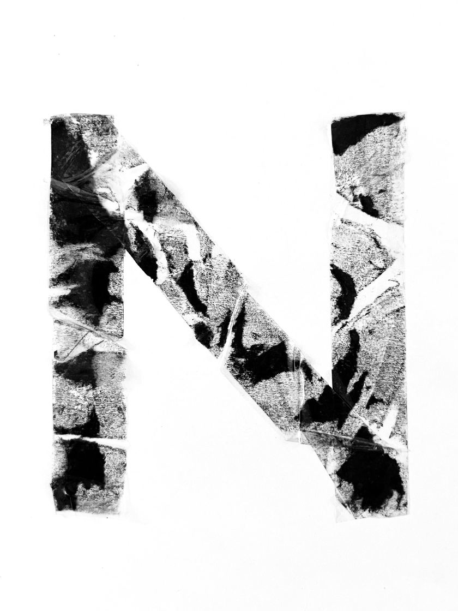
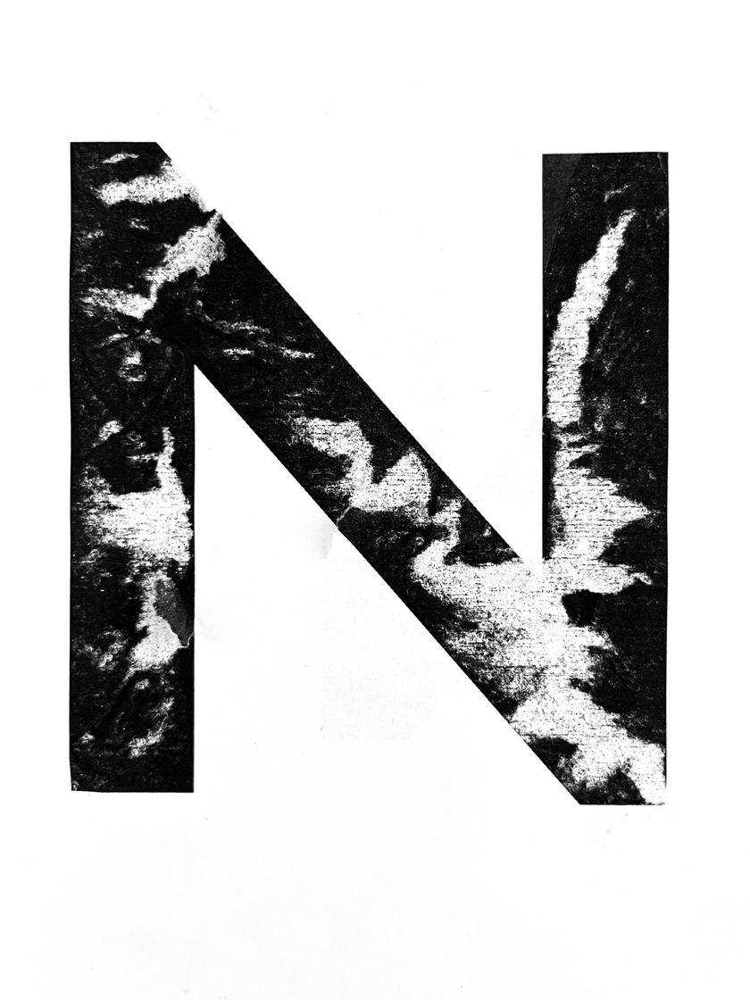
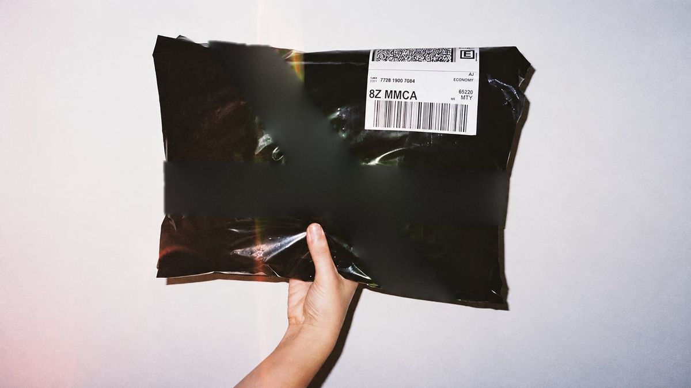
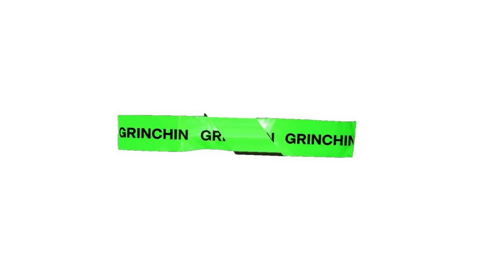
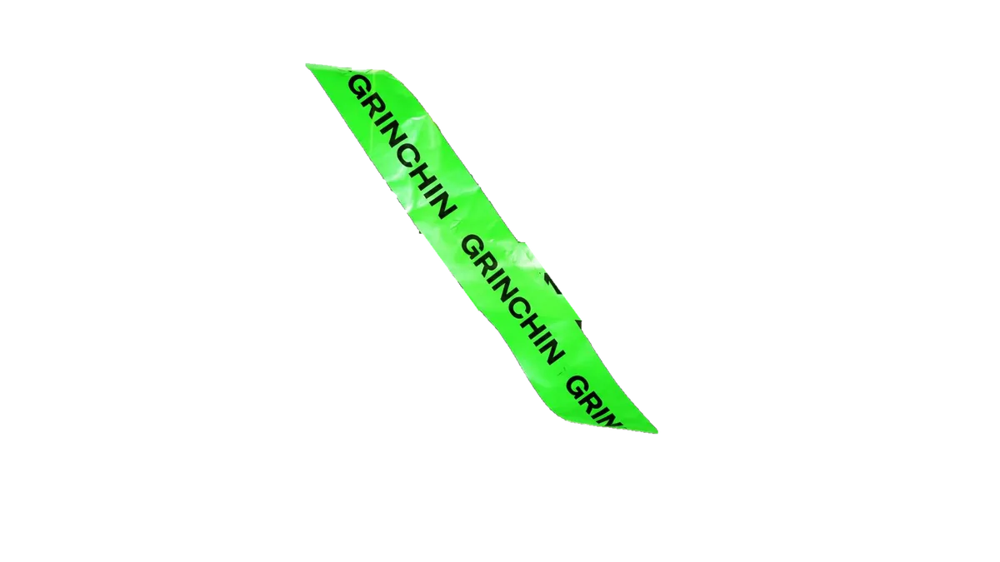

Одежда для тех, кто не идёт по заданному маршруту.
Смотреть дроп
Дроп 0108
эскизы · фото после съёмки
Образы





-

-

-

Разобрали — вернём.
Дата — тем, кто подписан.



Есть. Ты в списке.
Напишем в Telegram.